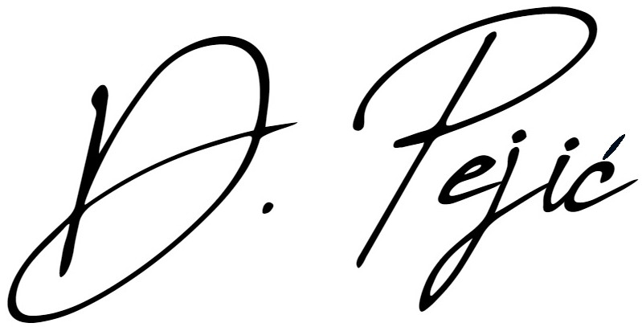

Dijana Pejić
Pozdrav svima! Ja sam Dijana, uglavnom zvana Diki. Rođena sam i odrasla u Banjaluci. Kad sam bila mala željela sam da budem Petar Pan i nije me bilo briga kako se oblačim, jer me mama oblačila. Sad kad gledam stare fotografije, vidim da ni nju nije bilo briga. U horoskopu sam jarac, a svi koji me poznaju će vam reći da sam i tvrdoglava kao jarac. Obožavam čokoladu s lješnjacima, ali onim cijelima. Obožavam plavu boju, ali ponekad sam u crvenom, bijelom i zelenom raspoloženju.


Po zanimanju sam diplomirani ekonomista. Trenutno pohađam program IT Prekvalifikacije na smjeru Razvoj web aplikacija - klijentska strana. U sklopu tog programa nastao je ovaj sajt. Ovdje možete saznati koji je moj omiljeni film i grad, koji mi je hobi, šta želim da dobijem sljedeće godine za rođendan kao i da pogledate moju foto galeriju. Na kraju vas čeka Kviz zato pažljivo čitajte. A za sve one koji žele saznati više o meni možete pročitati moj CV klikom na dugme ispod.